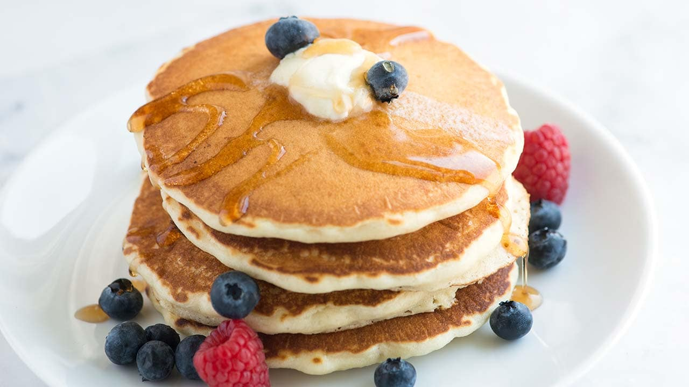
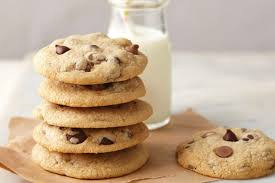

Home Page
Solar System
Resume
Pancake Recipe

Chocolate chip cookies
Ingredients
- 1 cup all-purpose flour
- 2 tablespoons sugar
- 2 teaspoons baking powder
- 1/2 teaspoon salt
- 1 cup milk
- 1 egg
- 2 tablespoons melted butter or vegetable oil
- Optional: 1 teaspoon vanilla extract
Instructions
- In a large bowl, whisk together the flour, sugar, baking powder, and salt.
- In another bowl, combine the milk, egg, melted butter (or oil), and vanilla extract, if using. Mix well.
- Pour the wet ingredients into the dry ingredients. Stir until just combined; it’s okay if there are a few lumps.
- Preheat a non-stick skillet or griddle over medium heat. Lightly grease with butter or oil.
- Pour 1/4 cup of batter onto the skillet for each pancake. Cook until bubbles form on the surface, about 2-3 minutes.
- Flip the pancakes and cook for another 1-2 minutes, or until golden brown.
- Repeat with the remaining batter, greasing the skillet as needed.
Serving Suggestions
Serve pancakes warm with maple syrup, fresh fruit, whipped cream, or your favorite toppings!
Chocolate Chip Cookies

Ingredients
- 1 cup butter, softened
- 1 cup white sugar
- 1 cup packed brown sugar
- 2 eggs
- 2 teaspoons vanilla extract
- 3 cups all-purpose flour
- 1 teaspoon baking soda
- 2 teaspoons hot water
- 1/2 teaspoon salt
- 2 cups semisweet chocolate chips
Instructions
- Preheat your oven to 350°F (175°C).
- In a large bowl, cream together the butter, white sugar, and brown sugar until smooth.
- Beat in the eggs one at a time, then stir in the vanilla.
- In a separate bowl, combine the flour, baking soda, and salt.
- Gradually blend the dry ingredients into the creamed mixture.
- Finally, stir in the chocolate chips.
- Drop by large spoonfuls onto ungreased pans.
- Bake for about 10 minutes in the preheated oven, or until edges are nicely browned.
Serving Suggestions
Enjoy warm cookies with a glass of milk or serve them at parties for a sweet treat!